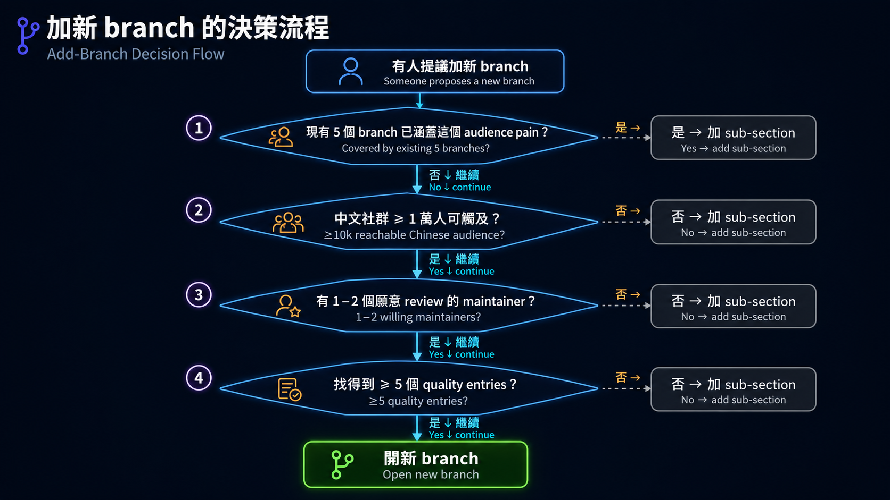

原课程本地核对资料，保留原内容与顺序。外链已改为本地阅读入口。命令中的原仓库路径请按本课运行指南换成实际位置；版本差异见本课说明。MIT © 2026 Wenyu Chiou。
Branch 設計筆記
這份是給 maintainer 看的內部文件，不是讀者面向的內容。
5 個 branch 怎麼分、entry 怎麼判斷該放哪、什麼時候要不要新開 branch——這些設計決定的記錄。新 maintainer 接手時看這份就懂為什麼是這樣分。
為什麼是 5 個 branch（不是 3 個或 10 個）
Branch 跟 Track 的關係
5 條 branch 設計成 兩條軌道走完都接得上：
- Track A 完成 A3 → 從 branches 選一條繼續
- Track B 完成 Stage 7 → 從 branches 選一條繼續
- Branch entry 的 curation 標準不依軌道區分——同一個工具不論是 Track A 用法（用現成 CLI）還是 Track B 用法（自己接 SDK），都放在對應 audience 的 branch 內
例外：for-everyday-users branch 可以直接進入——不一定要走完軌道。這條 branch 的目標讀者是「Claude.ai / ChatGPT 重度使用者，想用 AI 但不一定想 build」，他們可能根本不需要碰 Track A 或 B；branch 內也明確標示「不一定要走完整條主幹」。其他 4 條 branch（researcher / developer / teacher / knowledge-worker）預設讀者已走完一條軌道。
Branch maintainer 應該意識到：進來看 branch 的讀者背景可能差很多——剛走完 Track A 的人對 framework 內部不熟、剛走完 Track B 的人對 CLI 操作可能不熟、直接進 everyday-users 的人對 Stage 0-2 都可能跳過。Branch entry 的 prose 要盡量讓這幾種讀者都看得懂。
太少（≤3）的問題
3 個會強行把多個 audience 塞同一條，譬如「professional」涵蓋 dev + researcher + knowledge worker——但他們的 pain point 完全不同。研究者要 grounded citation，開發者要 git-native，知識工作者要 email triage——硬擠成一條 branch 會讓 entry 互相 dilute。
太多（≥7）的問題
audience 切太細會：
- 每個 branch 都很薄（沒幾個 entry），讀者覺得不被照顧
- 邊界開始模糊（資料科學家 vs 機器學習工程師？產品經理 vs 顧問？）
- maintain 成本變高（要看的 branch 變多）
5 是 sweet spot
4 個職業（research / dev / teach / knowledge work）覆蓋大部分專業場景；第 5 個 everyday users 收尾「不寫 code 的純使用者」這條沒被任何職業 branch 照顧到的 audience。
判準：每個 branch 都應該對應到一個讀者一秒就能自我認領的身份標籤。如果 maintainer 自己都要想 30 秒才能決定一個 entry 該放哪，就是 branch 切得不夠清楚。
5 個 audience 的核心 pain point
每個 branch 都是回應一個具體 pain，不是涵蓋一整個職業生涯：
| Branch | 核心 pain | branch 主要回應 |
|---|---|---|
| 🔬 研究人員 | 「我要 review 100 篇 paper、寫 lit review，但時間不夠」 | 文獻 RAG、Outline-driven 寫作、Zotero 整合 |
| 💻 開發者 | 「我有 10 個 PR 要 review、每個 codebase 都不同 convention」 | git-native CLI、IDE coding agent、code review skill |
| 🎓 教師 | 「備課要花 4 小時、我手上的 prompt 都太通用」 | 學科特化 prompt、課程素材、評量自動化 |
| 📊 知識工作者 | 「每天信箱 100 封、會議紀錄要轉成 action items、隔天還要寫 weekly report」 | Email triage、會議紀錄、自動化 workflow |
| 👥 日常使用者 | 「我不寫 code，但想用 AI 改善生活，不知道從哪開始」 | 按工作選 Chat surface、App／Connector、CLI Agent 或 Local LLM Runtime |
每個 branch 的 entry 選入都應該回到「能不能解決核心 pain」這個問題。如果不能，就是 entry 該放別的地方。
Branch 頁的閱讀順序
加入 scripts/reader-ux-pages.yml 的 Branch 不是工具倉庫。讀者第一次打開頁面時，必須依序看到 📌 這條路解決什麼、🎯 四個目標、🧩 粗體核心詞、🛠 一個可直接複製的安全任務、可選入口、必修閱讀與 ✅ 完成條件。收合與否看讀者是否立刻需要：第一題會用到的來源、推薦入口與安全警告必須可見；時間、帳號、費用、替代方案、進階流程與排錯才放進預設關閉的 <details markdown="1">。必修閱讀與精選 Projects／學習資源保持可見，因為安全政策、工具身分與下一個入口很容易被忽略。舊深連結的空 anchor 要放在語意相符的新 heading 或收合摘要旁，不能全部堆在頁首。
白話只能降低理解門檻，不能刪掉專業詞。研究人員頁要保留 Source、Claim、Citation、Source Verification、Literature RAG、Reproducibility、Private Data 與 Human Review；第一個任務固定教「公開 paper → 三個問題 → 逐 citation 對原文 → 未支持就標出」。開發者頁要保留 IDE／Surface、Coding Agent／Harness、Provider／Router、Model／Runtime、Sandbox、Approval、Diff／Rollback 與 Eval／Observability，而且成對列出不代表它們是同義詞；第一個任務固定教 read-only plan → 人工批准 → 小改 → diff → test → 人工 review → rollback，且不授權 push、merge 或 deploy。教師頁要保留 Learning Objective、Scaffolding、Rubric、Formative Assessment、AI Literacy、Student Data、Human Review 與 Academic Integrity；第一個任務固定使用虛構課堂資料，教「目標 → AI 草稿 → 教師檢查隱私／事實／偏見 → 學生使用 → 教師觀察並修改」。
開發工具的「核心身分」和「Surface」必須分開說明。兩欄資源表以有標籤的獨立段落呈現這兩個欄位，不能把它們合成一種工具分類。Coding agent 可以同時有 CLI、IDE、desktop、cloud、CI 或 SDK surface；IDE／CLI 不是互斥產品分類。OpenRouter 是 API Router，Ollama 是 local model runtime，OpenCode／Pi 等才是 coding agent／harness，不能因名字相近而混在一起。
完整資源表保留五星編輯評分，但不保存 GitHub stars。研究人員頁固定 15 筆、3／4／5／2／1 五組；開發者頁固定 14 筆、4／6／2／2 四組，補齊現行 Codex 與 GitHub Copilot，並把 Continue、Roo Code 放在維護／歷史組；教師頁固定 12 筆、3／3／3／3 四組；知識工作者頁固定 15 筆、4／4／2／3／2 五組；日常使用者頁現為 23 筆、4／8／4／4／2／1 六組，其中 8 筆是個人 Agent 產品。五頁的必修閱讀、精選工具及學習資源預設可見，因為安全入口與工具身分直接影響第一個練習。每組使用獨立 <tbody> 與真正 rowspan；三語的 URL、順序、評分、狀態、授權與安全限制要結構化比對。已封存的 open_deep_research 與 Roo Code 只能放歷史組；已封存的 Flowise 不放進知識工作者現行推薦組。Gemini Notebook 第一次出現時可附舊名 NotebookLM 幫助辨識。教師頁不能把一般消費者帳號寫成學校已核准方案；地區、資格與資料條款不確定時要明說。
知識工作者頁的九個核心詞固定為 Source、Action Item、Knowledge Base、Private Data、Human Review、App／Connector、MCP Server、Workflow Automation 與 Approval Gate。第一題只用虛構會議紀錄，固定輸出 Decision | Action Item | Owner | Due date | Source sentence | Needs confirmation，缺少人名或日期時要標記確認，不得猜測或直接寫回外部系統。ChatGPT 現行把 Connector 稱為 App，但不同供應商仍可能保留 Connector；App／Connector 是服務內的橋，MCP Server 是協定端點，Workflow Automation 是 trigger／condition／action 的重複流程，三者不能互換。官方 MCP Registry 仍是 Preview，namespace／metadata 驗證不能寫成安全背書。n8n 的 Sustainable Use License、Dify／LobeHub 的額外商用條件，以及自架工具實際資料流都要明寫；固定安裝時間、整合數量與 GitHub stars 不進教材。
教師頁的安全線與新圖都不能暗示 AI 可以自行評分、診斷學生、推測特殊教育需求或用單次輸出判定能力。圖只表達教師把關循環，不取代 Human Review、校方政策或所在地規則；三語版本必須保持相同五步、同一箭頭方向與各自語系文字。
日常使用者頁的九個核心詞固定為 Prompt、Source、Private Data、Hallucination、Human Review、App／Connector、CLI Agent、Local LLM／Runtime 與 Approval Gate。第一題只用虛構訊息，固定輸出 Draft | Facts copied | Needs confirmation，不能猜測或自行傳送。Chat surface、App／Connector、CLI Agent、Local LLM Runtime 是按工作選的四扇門，不是由低到高的 Tier；desktop 只是 surface，不代表功能等級。App／Connector 的能力取決於方案、地區、workspace 與原服務權限；CLI Agent 在寫檔／執行命令前要有 preview／diff／approval；Local Runtime 啟用 cloud model、web search 或雲端功能時，不能再宣稱所有資料都留在裝置。
連接前的「讀什麼、送去哪、能改什麼、怎麼收回」四問放在核心詞後，保持展開。個人 Agent 的資格、候補狀態與重要資料限制也不能只藏在補充選單。Claude Duet 是產品，不是新的模型家族；只更新它自己的查核日期，不重標未複查的其他產品。來源與星等說明必須明示文件查核不等於實測。
日常使用者的完整資源表採兩欄：「分類」與「資源、用途與限制」。每筆依序顯示名稱與星等、工具身分、用途、狀態／授權、限制；只搬排，不刪除原有欄位資訊。分類仍以六個 <tbody> 和真正 rowspan 合併。外層 reader-resource-catalog 使用有名稱、可鍵盤聚焦的 region；手機直接向下讀，不把重要資訊藏進收合區，也不把七欄硬縮成窄字柱。
其餘四條角色路線沿用相同兩欄容器。研究人員、教師與知識工作者每筆依序保留名稱與星等、用途、狀態／授權、限制；開發者另外保留有標籤的「核心身分」與「主要 Surface」兩段，最後一段保留原有狀態、授權與限制，不拆出未查證的新結論。四頁各自的分類名稱、資源順序與分組數量維持上列契約；不能用刪列、藏欄、縮小字體或重複星等來假裝變短。搬排時逐格比較原始內容，三語核對 URL、星等、欄位順序與安全限制，再以手機與桌面實際建置頁確認。
這四頁的 repo 連結優先顯示專案短名稱，省略作者／組織前綴；完整 owner/repo 保留在 URL，不在名稱裡插入 <br> 強制換行。已有清楚的產品名稱就沿用，三語保持同一專案與連結。英文研究者的分類以 Repeatable research and evidence 對應「可重現與證據」，避免長單字撐寬分類欄；正式名詞仍由正文解釋。GitHub 原生 Markdown 不載入本站 CSS；驗收時檢查 table 的 scrollWidth，不能只看外框寬度便宣稱沒有裁切，也不靠不可見字元或被過濾的 <wbr> 補救。
文件站在 600 px 以下改為「分類橫向標題 → 全寬資源」，不再替左側分類保留整欄。桌面仍用原有兩欄與真正 rowspan；兩種畫面共用同一份內容。必讀、名稱、星等、用途、工具身分、授權與限制不隱藏、不截斷，也不縮字。驗收須量測手機資源欄至少占表格寬度 90%，分類在內容上方；只驗沒有 overflow 不代表好讀。GitHub 原生預覽另行檢查，但不宣稱它能套用文件站 CSS。
Branch 之間的邊界
判斷一個 entry 該放哪個 branch，按這 3 條判準依序考慮：
1. 主要 user persona
看上面 pain table——這個 entry 解決的是哪一個 audience 的 pain？通常很清楚。
2. 預期動手程度
不寫 code 的工具 → 偏 everyday-users / knowledge-worker。CLI / SDK 工具 → 偏 developer。介於中間（譬如 ChatPaper 是命令列但對研究者友善）→ 看 #1 主要 persona。
3. 應用場景
同一個工具在不同場景下歸類不同。例如：
- Ollama：給 everyday-users 是「Local LLM Runtime 入口」，給 developer 是「開發 agent 的本地測試 backend」——兩處都要說清 cloud model／web search 不是本機推論；基礎模型說明仍由 Stage 1 提供。
- f/prompts.chat：放 for-teacher（給教師當教材參考）、也放 for-everyday-users（不寫 code 也能用的 prompt 庫）。
灰色地帶處理（同一 repo 出現在多 branch）
規則：同一 repo 可以在多 branch 出現，但每處要有不同的 framing（適合誰、教什麼）。推薦星等預設一致——同一個工具的客觀價值不會因 audience 改變；除非有明確的 audience-specific 理由（譬如「進階度差太多」），且寫進 Notes 解釋。詳見 resources/style-guide.md 2。
範例：
obra/superpowers出現在 Stage 5、for-developer、for-knowledge-worker、for-teacher- Stage 5：作為 SKILL.md collection 範例
- for-developer：作為 TDD / debug skill 來源
- for-knowledge-worker：作為腦力激盪 / 規劃 skill
- for-teacher：作為通用寫作 skill
- 4 處都是 ⭐⭐⭐⭐（這是規則的正例：framing 不同、評等一致）
反例（不該這樣做）：
kaixindelele/ChatPaper只放 for-researcher，不放 for-everyday-users。原因：它是研究者專用流程（總結 / 翻譯 / 審稿回覆），everyday user 用不到也不該被推。
兩種 entry 結構：job-based doors vs flat
Job-based doors（用在 for-everyday-users）
使用條件：入口的能力、風險與使用目的不同，但不是由低到高的升級關係。Everyday users 固定按工作選 Chat surface、App／Connector、CLI Agent 或 Local LLM Runtime；每扇門都在表中先說用途與動手前的安全檢查。四列短表比流程圖更容易讀，也避免讀者把箭頭誤認成必走順序，因此不再使用 branch-tier-progression.png。
Flat 結構（其他 4 個 branch 都用這個）
單一個 list，照子主題分類（Coding Agents / Code Review / Workflow Tools 等）。 用 flat 的條件：audience 內部相對同質——研究者多半願意動手用 CLI、開發者一定會寫 code，沒必要分 tier。
什麼時候從 flat 改成 job-based doors
只有當不同入口的「身分、權限與安全邊界」真的不同時才改；不能只因工具比較難，就畫成升級階梯。先問「讀者是在選工作入口，還是在學同一能力的進階版本？」前者用 doors，後者才可討論 level。
自我引用排除原則
WenyuChiou/* repo 一律不收（已從 catalog 移除 32 instances）。
例外（什麼條件下作者自己的 repo 才能加回去）
- 該 repo 在某個 stage / branch 是唯一夠用的選項（沒其他社群替代）
- 至少 2 個 stage maintainer 簽字同意
- 在 entry notes 明確標註「作者維護的 repo，含利益關係」
- 加一個「替代品」連結，方便讀者比較
目前 0 個 entry 滿足這 4 條——保持 0 個是健康狀態。
加新 branch 的決策樹

範例：要不要加 for-data-scientists？
- pain 已被 for-researcher 涵蓋（文獻 RAG、實驗設計）
- audience scale 大，但跟 researcher 重疊高
- 結論：不加 branch，但可以在 for-researcher 加「資料科學工具」 sub-section
範例：要不要加 for-product-managers？
- pain 已被 for-knowledge-worker 涵蓋（會議紀錄、report、跨 team 溝通）
- audience scale 大但邊界跟 knowledge-worker 模糊
- 結論：不加 branch，在 for-knowledge-worker 加「產品經理」use case
5 條 branch 的 maintenance 想法（不是 SLA）
社群 repo 的維護是「能做就做」、不是排程義務。下面是大致方向：
Review 頻率
- 沒有強制人工節奏。Content Health 每週整理外部連結與 repository 狀態，每月再整理模型與產品 freshness 證據；它不會自動改寫或合併教材。
- 有空想動的人 → 跑
python scripts/check-repository-freshness.py full看哪些 entry 搬家、封存、停用或 License 改變，再用python scripts/check-links.py --fast找失效連結。
Entry 加入 / 移除節奏
- 加入：看到值得收的就 PR。不必為了「衝量」主動找。
- 移除：archived / 長期沒 commit / license 變奇怪 → 看到再標 ⚠️ 或 PR 拿掉。
跟 main path stages 的同步
- Stage 改了某個 entry，branch 引用該 entry 的地方順手更新就好——沒做也不會壞。
Maintainer 自薦 / 退場機制
- 想擔任 maintainer 開 issue 自薦就好，不用承諾什麼具體期間。「我 review 一次」也算貢獻。
- 退場：不需要 ceremony——維持沉默 2 個月，自動視為退場，新人接手
- 詳見
CONTRIBUTORS.md
不在這份的內容
- 個別 branch 的 entry 詳細：見
for-X.md本身 - stage 設計理由：見
../stages/DESIGN.md - entry schema / 用詞規範：見
../resources/style-guide.md